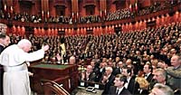
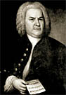

Me hacen llegar esta página de los Cuadernos Monásticos, "Revista trimestral de espiritualidad monástica de la Conferencia de Comunidades Monásticas del Cono Sur".
Se trata, en concreto, de benedictinos y cistercienses de Argentina, Chile, Paraguay y Uruguay.
Parte de los artículos están on-line, y parecen valer la pena.
Curiosa, además, es la imagen de tapa, que acá copio.
Y hermosamente significativa,
como tantas de esas ilustraciones medievales.
Esta
sería del año 807, y representa al evangelista San Mateo
"sostiene su evangelio en su mano izquierda y
tiene la mano derecha sobre el corazón".
Con esto de las eleccciones pasadas en EEUU, y el asunto de Irak, los weblogs católicos de por allá (conservadores - republicanos en su inmensa mayoría) se me vuelven a veces un poco indigestos... duele ver en gente inteligente (y católica) ese ceder a la "carne" (en este caso, la pasión partidaria, el demonio de "lo social") , y hasta alentar esas mismas malas pasiones (miedos, ansiedades y odios, también: hacia "la izquierda" y hacia el islam) y en nombre del mismo cristianismo.
Ya he comentado algo, y alguna vez tengo que escribir algo más largo...
Mientras tanto, digamos que no todos caen en esa;
algunos -dichosamente- se resisten; algunos
se esfuerzan en no olvidar lo que "el mundo"
quiere hacernos olvidar: que a la Verdad
nunca se llega siguiendo las pendientes de nuestras
pasiones;
que la vocación (cristiana) a la verdad y la justicia
exige una especie de "ascetismo" ...
Es refrescante encontrarse con posts como
éste o
éste.
-
"... the tyranny of tradition and culture. I haven't
yet "stepped outside the box" of my culture much. Sure,
the arguments of the conservatives sound utterly convincing to me,
but is this a result of true open-mindedness or am I a
product of my background? How can I ascribe the latter to those
who are liberals but not to myself? You can't tell me
that it's a coincidence that 80% (or so) of Protestants
never become Catholics and vice-versa. If the claims of
Catholicism were equally compelling with Protestantism then
one would expect approximately 50% of Catholics becoming Prots & vice-versa.
Dos aclaraciones un poco obvias para terminar (por ahora):
1) A mí no me miren. Quiero decir: no se trata de que yo esté
criticando pecados ajenos, tirando primeras piedras, etc.
No estoy libre de esas culpas, ni de ninguna. No se trata de eso.
2) Si alguno quiere extraer de lo anterior una posición mía
a favor/en contra de la guerra contra de EEUU vs. Irak,
o de izquierdas/derechas o de republicanos/demócratas,
le sugiero que cambie de weblog.
En aciprensa han puesto una paginita dedicada a Dorothy Day; yanqui conversa, de juventud izquierdosa militante; es muy conocida y admirada en EEUU (aún entre católicos "conservadores"), muchos la consideran una de las santas del siglo XX (links en inglés).
-
...
Meantime the young man had closed the museum door and was crossing the hall. He was a wiry-haired, severe-looking young man, with a sharp nose and eyes that gleamed through rimless spectacles-none other, in fact than Lord Emsworth's private secretary, the Efficient Baxter ...
De un lado, hay personas que con sólo escuchar (o rememorar) las palabras "el eficiente Baxter" automáticamente sonríen, y sienten una especie de brisa fresca que les alegra el alma durante el resto del día (por lo menos).
Del otro lado, hay personas que no tienen la menor idea de quién es ese Baxter, y al oír tales palabras permanecen tan insensibles como un pedazo de corcho.
Uno se siente tentado de protestar por la mera existencia
(mayoritaria, encima, al parecer) de este segundo grupo,
y a inculparlos en masse por ese desprecio
-que roza lo pecaminoso- hacia las bellezas de este mundo.
Pero debemos esforzarnos en ser magnánimos y
compresivos.
Al fin de cuentas, esas gentes
are more to be pitied than censured.
-
Aquí, en este mundo, la verdad es despreciada y humillada; no tiene donde apoyar la cabeza, debe agradecer si le ofrecen un vaso de agua. Pero si un hombre la reconoce abierta y públicamente por lo que ella es, esta figura miserable, esta pobre, deshonrada, despreciada, perseguida Cenicienta, la Verdad, toma un punzón en su mano e incide en una tablilla las palabras: "para la eternidad" y se la da a aquel hombre que, como su contemporáneo, es decir en medio a los sufrimientos, la ha reconocido como verdad. Su nombre está escrito en el cielo, su vida (y a esto se adapta el hombre frecuentemente de mala gana) fue usada para la sola cosa que se puede recordar en la eternidad.
Soren Kierkegaard
El momento
-
En general las desviaciones fundamentales respecto al Cristianismo son dos:
1) El Cristianismo no es una doctrina sino una comunicación de existencia. (Después vinieron todas las exageraciones de la ortodoxia con discusiones sobre esta o aquella cosa, mientras la existencia queda completamente intacta, así se discuta del cristianismo como de la esencia filosofía platónica). Por esto cada generación debe empezar de nuevo; toda esta erudición sobre las generaciones pasadas es esencialmente superflua, pero no hay que despreciarla si se comprende a sí misma y a sus propios límites, y es muy peligrosa si no lo hace.
2) En consecuencia (porque el cristianismo no es una doctrina), respecto al cristianismo no es indiferente la persona que lo expone (como sí lo es para una doctrina), como si bastase exponerlo con exactitud objetiva. No. Cristo no ha instituido docentes sino imitadores. Si el cristianismo (precisamente porque no es una doctrina) no se reduplica en quien lo expone, éste no expone el cristianismo; porque el cristianismo es una comunicación de existencia y puede ser expuesto sólo con el existir. Existir en él es expresarlo existiendo: ésto es reduplicar»
Soren Kierkegaard
Diario - IX A 207.
(más...)
Uno de los precursores en la letrística del tango es José González Castillo; ya antes del '30 aportaba toques poéticos al tango, prefigurando a los grandes: Homero Manzi, por ejemplo; y también su propio hijo, Cátulo Castillo.
Cátulo también se dedicó -sobre todo al principio- a la música, y padre e hijo compusieron así unas cuantas cosas lindas; por ejemplo, este tanguito con aire campero: El aguacero.
La carreta que trajina el campo,
la descripción de la tormenta que se viene (el "gusto"
a tierra mojada que trae el viento; la bulla de los horneros),
la lluvia que se desata, la alegría de
los bueyes ... todo matizado con las humildísimas
metáforas "espirituales": la pampa/la vida
(sin sombras ni heridas / sin pena ni amor ;
el pampero que "sopla su dolor").
Acá, pues, El aguacero, de
José González Castillo y Cátulo Castillo (1930),
en
versión de Rubén Juárez con orquesta de Pontier (1972);
en
Real Audio o en
Windows Media.
Y la Pampa es un verde pañuelo,
colgado del cielo, tendido en el sol;
como a veces resulta la vida
sin sombras ni heridas, sin pena ni amor...
El viento de la cañada
trae gusto a tierra mojada
y en el canto del viejo boyero
parece el pampero
soplar su dolor...
Se ha desatado de repente la tormenta
y es la lluvia una cortina tendida en la inmensidad;
mientras los bueyes, en la senda polvorienta,
dan soplidos de contento como con ganas de andar...
¡Bien haiga el canto del tero
que saluda al aguacero!
Ya no es tan triste la tristeza del camino
y en el pértigo el boyero siente ganas de cantar.
...
Actualización: En esta página hay información
sobre este tango, incluido un breve vocabulario para
no argentinos.
Y acá
está el catálogo de un disco de Susana Rinaldi
dedicado a Cátulo Castillo, con un demo (45 segundos) de El aguacero en Real Audio.
 Podría acaso ser (ojalá sea) una lección para otros:
"el que quiera salvar su imagen, la perderá", el que la pierda por el evangelio, la ganará.
- ...
Con voz firme, el Papa llamó a los dirigentes a adoptar programas que "hagan menos pesada, tanto social como económicamente, la tarea de tener hijos y criarlos".
...
Discurso completo acá.
Una nota (en inglés; del National Review) sobre nuestra Google-dependencia; interesante, sobre todo, lo referente a Google en cuanto "sustituto de la erudición". El "capital" del erudito parece perder valor, como la habilidad del que sabía usar la regla de cálculo frente a la aparición de las calculadoras electrónicas... Lados buenos y lados malos. Si nos ponemos en pesimistas, podríamos recordar lo que recuerda la nota que decía Platón sobre la escritura (que perjudicaría la memoria del hombre), y sospechar que Google potencia este peligro. Cada vez hay más disponibilidad de información; cada vez hay menos gente que sepa y recuerde cosas...
-
Me ha pasado muchas veces, en los últimos tiempos, que
me encuentro leyendo una revista (en papel o en internet)
que contiene demasiadas referencias eruditas
o citas adecuadas; y me digo "Ah, éste anduvo por Google"...
Hubo un tiempo no muy lejano en que, cuando un escritor decía "Kierkegaard notó que..." , uno podía suponer que el escritor había -con alguna probabilidad- leído efectivamente a Kierkegaard...
No hace falta decir, pero digámoslo, que esto no quita
nada al ... digamos "amor" que todos tenemos por
Google.
(link vía Gerard's blog )
 Leyendo la "Postdata definitiva no-científica a las 'Migajas
Filosóficas'" (o "apostilla conclusiva" ; Concluding Unscientific Postscript)
de Soren Kierkegaard. Mejor dicho, acometiendo (por
segunda vez) la dificultosa lectura ... encima, en inglés; el único
libro que he comprado en Amazon (tiempos pre-devaluación).
Es que no hay una traducción española -y eso que muchos dicen que
este es el libro más importante de Kiekegaard .... claro
que el "Diario de un seductor" tiene un título mucho más
vendedor... Creo que ahora la editorial Trotta lo estaba
por editar.
Leyendo la "Postdata definitiva no-científica a las 'Migajas
Filosóficas'" (o "apostilla conclusiva" ; Concluding Unscientific Postscript)
de Soren Kierkegaard. Mejor dicho, acometiendo (por
segunda vez) la dificultosa lectura ... encima, en inglés; el único
libro que he comprado en Amazon (tiempos pre-devaluación).
Es que no hay una traducción española -y eso que muchos dicen que
este es el libro más importante de Kiekegaard .... claro
que el "Diario de un seductor" tiene un título mucho más
vendedor... Creo que ahora la editorial Trotta lo estaba
por editar. Muchas cosas interesantes, ya sacaremos algo para comentar.
Buscando, encuentro esto en arvo.net: una
Guía del pensamiento de Kierkegaard,
traducción de un libro italiano (Mariano Fazio, autor desconocido para mí).
Parece que está el libro completo on line.... y parece -en una
primerísima mirada- que vale la pena pegarle una leída.
(Actualizado: en efecto, leídos varios capítulos, diría que
es una introducción bastante completa y adecuada para conocer
a SK ; recomendado . El sitio tiene además la opción de presentación
"printer-friendly", para imprimir).
Gerard (que además recuerda que hoy es el cumpleaños de San Agustín... cumpliría 1648 años) trae una cita curiosa de Karl Barth:
-
No sé si será cierto eso de que los ángeles sólo tocan
música de Bach para alabar a Dios; lo que
sí podría asegurar es que , cuando están 'en famille',
tocan música de Mozart.
No está mal...
Karl Barth (1886-1968) es un teólogo protestante;
como dice acá :
"uno de los teólogos protestante más grandes del siglo XX, y probablemente
el más grande desde la Reforma". Lejos del progresismo
liberal; intelectualidad profunda y severa; muy influido
por Kierkegaard, influyó sobre
mucha de la teología del último siglo (católica incluida).

Y en todo caso... yo creo que a Dios también le tiene que gustar
Mozart, cómo no.
Y -por otra parte- pondría las manos en el fuego
por la salvación del alma de Bach y de Mozart; creo que hay grados del
arte que requieren algo así como una santidad...
Y vamos con algo de Bach, en Real Audio: fantasía en Sol para órgano y Suite No. 3 (preludio) en guitarra (original para cello).
-
Y bien, señor Senescal, tu misión es
conservar el reino,
a la espera de ese acontecimiento
[el retorno del Rey] que ya muy
pocos hombres esperan ver.
Para esa tarea,
recibirás toda la ayuda que pidas.
Pero una cosa quiero decirte: yo no gobierno en ningún reino, ni en el de Gondor, ni en ningún otro, grande o pequeño. Pero me ocupo de todas las cosas valiosas que peligran en este mundo de hoy. Y yo por mi parte, no fracasaré del todo en mi tarea, aun cuando Gondor pereciera, si algo lograra traspasar esta noche, y crecer en belleza y dar flores y frutos en los tiempos por venir.
También yo soy un senescal ... ¿ sabías ?
Gandalf, hablando con Denethor
El Señor de los Anillos, libro V, cap 1
J. R. R. Tolkien
Nuevo presidente del Episcopado ("máxima autoridad de la iglesia católica en Argentina", dice Clarín... que tiene sus propias ideas sobre la estructura de la Iglesia). Todos los medios se muestran adecuadamente satisfechos (pues ellos no sólo tienen sus propias ideas sobre la "estructura" de la institución, sino también de su misión y su sentido; Clarín incluye la noticia dentro de la sección 'Política'):
-
La designación implica una profundización en la línea crítica que mostró el Episcopado en los últimos años hacia el modelo socioeconómico....
las políticas neoliberales, los ajustes dictados por el FMI y la legitimidad de la pesada deuda externa
...
Se lo conoce por sus duros cuestionamientos a la dirigencia política y a los ajustes que pide el FMI.
...
de fuerte prestigio intelectual en la Universidad Católica Argentina (UCA) (!)
...
Su elección representa la continuidad de la línea pastoral trazada desde 1996 por monseñor Estanislao Karlic, marcada por un compromiso firme de la Iglesia por los desposeídos y una vocación abierta al diálogo con los distintos sectores de la sociedad.
-
La emisión y el escrutinio de votos se realizaron mediante un moderno sistema electrónico, con un código de barras identificador para cada obispo a fin de facilitar el recuento.
En cada instancia, los prelados recibieron una planilla con los códigos de los apellidos de todos los prelados habilitados para el cargo y marcaron con una cruz en el casillero correspondiente al voto emitido.
El material fue procesado mediante un lápiz óptico que se encarga de contar los votos y en cuestión de segundos determina quién fue el que recibió mayor adhesión.
(Clarín)
Votación electrónica [ subtitula
La Nación]
Los obispos utilizaron para votar un moderno sistema electrónico, que incluía planillas con los nombres de los prelados identificados con un código de barras, para facilitar el recuento.
En fin; más de lo mismo, según parece.
Más sermones que no dan frío ni calor, pero
son aptos para los medios; seguiremos
con esas líneas "pastorales"
de "solidaridad", de "comunidad", de "compromiso", de "servicio"...
Los hambrientos de santidad, de caridad, de belleza,
y de todas esas grandes y anticuadas cosas, tendrán que
seguir buscando por otro lado.
En Zenit está el discurso del saliente Karlic. Más de lo mismo. Los políticos
serán un desastre, pero nosotros -los obispos- andamos bárbaro;
hemos compuesto (y hacemos rezar todos los días
a los sufridos asistentes a la misa diaria de la Catedral)
una "Oración a la patria" que es una maravilla;
tenemos "caridad fraterna", "serenidad", y montones
de "hechos extraordinarios" : "
encuentros de laicos, de catequesis, de liturgia, de educación, de familia, que han suscitado entusiasmo y han enseñado la verdad del Evangelio con la fuerza del testimonio y el gozo del compromiso" (no me digas!).
Sí te digo; y te digo más:
-
Importa destacar la presencia episcopal en el campo doctrinal de lo temporal, que ha constituido un verdadero magisterio social, aunque haya sido hecho con ocasión de hechos concretos. Por su profundidad y definición en las ideas, por su capacidad iluminadora de los acontecimientos y por su coherencia con los principios, por su espíritu caluroso y comprometido, han sido un modo estupendo de evangelización de la cultura y de educación del pueblo de Dios, sirviendo también a otros que no se confiesan miembros de la Iglesia.
-
El encantamiento erótico produce una mutua complacencia en la que a cada uno le agrada realmente ceder a los deseos del otro. También saben que el Enemigo les exige un grado de caridad que, de ser alcanzado, daría lugar a actos similares. Debes hacer que establezcan como una ley para toda su vida de casados ese grado de mutuo sacrificio de sí que actualmente emana espontáneo del encantamiento pero que, cuando el encantamiento se desvanezca, no tendrán caridad suficiente para poder realizarlos.
No verán la trampa, ya que están bajo la doble ceguera de confundir la excitación sexual con la caridad y de pensar que la excitación durará.
Si alguien sabe dónde puedo conseguir las obras completas de Ana Catalina Emmerich (en castellano; nuevas o usadas; preferentemente en Argentina), se agradecerá la información.
-
El rezo del Rosario: 31 días, 31 maneras -
Número 26
( por John Da Fiesole de Disputations; adaptación y traducción libre )
Un método tradicional para meditar en los misterios del Rosario es considerar cada uno como ejemplo de una determinada virtud o don, y rezar para crecer en esa virtud. Las siguientes correspondencias entre misterios y virtudes son del libro de R. Feeney "The Rosary: The little Summa", estructurado sobre reflexiones sacadas de la Escritura, de Santo Tomás, del CVII y de Juan Pablo II.
-
Misterios gozosos
La anunciación: fe
La visitación: caridad
La natividad: humildad
La presentación: justicia
Jesús encontrado en el templo: prudencia
Misterios dolorosos
La agonía en el huerto: religión
Los azotes en la columna: templanza
La coronación de espinas: amor a nuestros enemigos
Camino a la Cruz: fortaleza
La crucifixión: misericorida
Misterios gloriosos
La resurrección: la paz de Cristo
La Ascensión: esperanza
La venida del Espíritu Santo: los dones del Espíritu Santo
La Asunción: confianza en la intercesión de María
La Coronación: la gracia de momento presente
(Los misterios luminosos no figuran en esta edición... Sugerimos, a falta de otra cosa: castidad, alegría, sabiduría, temor santo, y reverencia).
La mayor parte no requieren comentario. "Religión", para Santo Tomás, es principalmente el conjunto de actos de devoción y oración dedicados al culto de Dios. Templanza es el ejercicio del control sobre los apetitos que inclinan al placer. La "gracia del momento presente... abre nuestras mentes a la grandeza de todas esas pequeñas cosas que nos relacionan con la eternidad" (Fr. Reginald Garrigou-Lagrange, OP).
Steven de Flos Carmeli está analizando el poema de San Juan de la Cruz que comentábamos hace poco, a propósito del papel "femenino" del alma (frente a Dios). Steven comenta algo sobre eso, también.
Anoche vi a los Coplanacu. Lindo. Había escuchado algunas cositas, pero nunca los había escuchado en vivo.
Folklore argentino, con buen gusto.
Y un poco para confirmar lo del post anterior: si algo hiciera falta para evidenciar la pobreza poética de los argentinos ... (no hace falta, ya sé ... basta con preguntar a cualquier joven -aun a los que se supone sensibles al arte- qué poesía argentina ha disfrutado...): algo que descubrí estos días:
Leopoldo Lugones, probablemente el poeta argentino más grande, casi no existe en internet. Muy pocas poesías suyas; y -si no me equivoco- nada de los libros más importantes (ni de la "Oda a los granados y a las mieses", ni de "Poemas Solariegos", ni del "Romancero del Río Seco").
Habrá algo de prejuicios ideológicos? Algo, acaso; pero no principalmente, creo. ... es falta de lectura de poesía, más que nada.
En todo caso, es una auténtica vergüenza nacional.
Como humilde aporte, empiezo a poner
algunos poemas que no están en la red.
Arranco con uno mis preferidos,
El pozo,
de los Poemas solariegos:
Como una telaraña abandonada
Al soplo misterioso de lo eterno,
La noche va borrándose, soslayada
En la oblicua pisada
Del perro cabizbajo, que a paso alterno,
Se aleja con ella por la cañada.
Con noble pesadumbre
El lucero se apaga en pepita de oro.
Triza la calandria en brindis canoro
El tenue cristal de la vislumbre.
Y desde las cicutas más acerbas,
Hasta la piadosa malva,
Se santifica en la paz del alba
La trémula adoración de las hierbas.
Sobre el roto lago de la bruma temprana,
Desprende su lóbrego témpano azul el cerro.
Y en el frescor de choclo tierno de la mañana,
Rompe a cantar la roldana
Como un valiente violín de hierro.
...
[versión completa]
En este libro (el anteúltimo) Lugones usa bastante esta
forma poética, con versos sin medida y ritmo irregular,
pero con rima rigurosa (él sostenía que
el metro no era esencia a la poesía, pero la rima sí).
La escena: una amanecer serrano (Córdoba), la chica
que, como primer tarea del día, va a sacar agua del
pozo (aljibe). El poema es un cuadro (impregnado de
deleite y de celebración) de ese momento...
Leía un librito sobre los poemas de Gerard Manley Hopkins (muy por arriba... mi inglés no da para tanto). Mencionaba el autor tres intereses de Hopkins, que se ven reflejados en sus diarios y su correspondencia: la versificación (los ritmos, aliteraciones, rimas y asonancias), el idioma (el sonido, el origen y el parentesco de las palabras), y la belleza plástica del mundo. Dirá alguno que lo primero es un "sine qua non", en un poeta; yo diría que los otros dos también. Amor por las palabras:
-
Original meaning to strike, rub, particularly together. That
which is produced by such means is the grit, the groats or
crumbs, like fragmentum from frangere, bit from bite
. Crumb, crumble perhaps akin. To greet, to strike the hands
together (?). Greet, grief, wearing, tribulation. Grief
possibly connected. Gruff with a sound as of two things rubbing
together. I believe these words to be onomatopoetic. Gr common to them
all representing a particular sound. In fact I think the onomatopoetic theory
has not had a fair chance. Cf. Crack, creak, croak, crake, graculus,
crackle. These must be onomatopoetic.
-
Water high at Hodder Roughs; where lit from within looking like pale
gold, elsewhere velvety brown like ginger syrop; heavy locks or brushes like
shaggy rope-ends rolling from a corner of the falls and one huddling over
another; below the rock the bubble jestled skirt of foam jumping back against
the fall, which cuts its way clean and will not. et it through, and there
spitting up in long white ragged shots and bushes like a mess of thongs of
bramble, and I saw by looking over nearer that those looping watersprigs that
lace and dance and jockey in the air are strung of single drops, the end one,
like a tassel or a heavier bead, the biggest; they look like bubbles in a
quill...
Necesidad de todo arte. Acaso por eso andamos por acá tan escasos de ambas cosas.